I have a handful of projects that began as a joke in a Kubernetes chat and somehow never stopped. Sheeternetes grew out of an argument about whether you could build a container orchestrator in a spreadsheet, and it turned out you could. Tatarnetes came from wanting kubectl to speak Tatar. Kyvernetria tried to answer, honestly, what Kubernetes would look like if its behaviour followed the average sex differences that science actually supports rather than the stereotypes. And Mansplainetes and Misogynetes appeared as satire aimed at the people who believe those stereotypes.
For a long time all of them lived at the level of "works on my laptop". This weekend I finally brought them to proper releases, and there turned out to be seven at once. Here is what is new in each, and why some of these jokes, to my own surprise, turned out to be useful.
Sheeternetes on-prem: an orchestrator that no longer needs Google
A quick reminder of how Sheeternetes works. A spreadsheet plays the role of etcd: its tabs hold deployments, nodes and pods, and an agent on every machine looks at the sheet every few seconds and starts the containers written there. Originally all of this ran only on top of Google Sheets, and one of our users wrote to us, very politely, that such a hard dependency on a single vendor made him uneasy.
There was nothing to argue with. A foundation that talks about neutrality louder than anyone cannot keep all of its users tied to one corporation. So in the first release of the on-prem edition a cluster can live in an Excel file, in a LibreOffice document, or simply in a folder of CSV files. The last option is my favourite, because you can sync such a folder with Syncthing or Nextcloud and get distributed cluster state with no server at all.
SheetGate, or how to reach a pod from outside
Until now Sheeternetes had an unpleasant property: nothing you ran in it could be reached from outside its host. Containers could see each other, but a user could not get to them. The new release fixes this in two steps.
First, a deployment got a cell for ports. Write 8080:80 there and the container is published on port 8080 of the host; give only the container port and a free host port is picked for you. The scheduler now treats occupied ports as a resource just like CPU and memory, so two replicas never land on the same port of the same node.
The second step is SheetGate, our answer to Ingress and the Gateway API. The sheet gained tabs for gateways and routes. You write a host, a path and a service name into a row, and Sheeternetes brings up nginx, generates its configuration and reloads it without downtime as soon as you change a cell. The outcome of every route is written back into the sheet, so the next column tells you straight away whether the route was accepted or points to a service that does not exist.
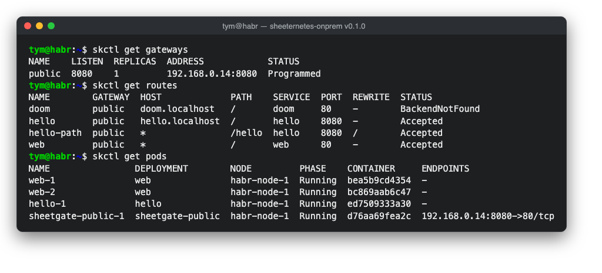
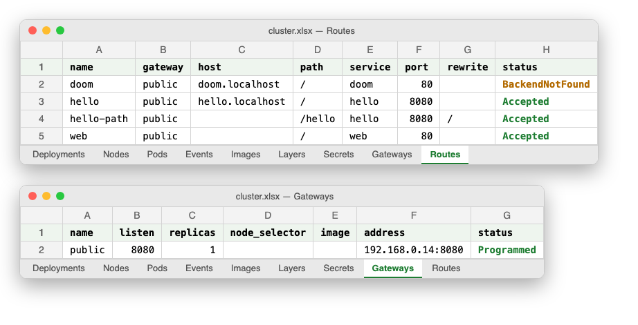
From the outside it looks like a perfectly ordinary web server. One address serves different applications depending on the host name or the path, and if the service a route points to is not in the cluster, the gateway honestly answers with a 502.
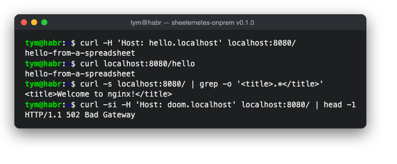
The first thing we exposed through SheetGate was, of course, DOOM. Its image also lives in spreadsheet cells, which makes for a nice chain: the sheet stores the game, the sheet schedules it, and the sheet decides at which address you can reach it.
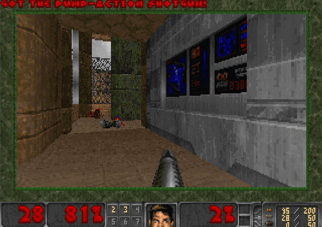
While we were at it, we also found a real and not at all funny bug. The API server handled requests in parallel, and sometimes one request read the spreadsheet file while another was still writing it. Once this even truncated a demo workbook. Access to the workbook is now strictly sequential, and saving is atomic, through a temporary file.
Tatarnetes: the Tatar kubectl completes, explains and talks to spreadsheets
Tatarnetes, a friendly project from our sister foundation, has three parts. There is ayda, a kubectl wrapper with Tatar commands; TatarOS, the same kind of wrapper around Talos; and a dashboard in national style, with a carpet in the background and mandatory tea breaks. All three were released together, and each has something to show.
Fresh upstream, checked against the real binaries
Tatarnetes is tied to the Kubernetes and Talos versions, so it now follows Kubernetes 1.37.1 and Talos 1.14.1. We did not just change the numbers in a file: we downloaded the real kubectl and talosctl and ran the whole dictionary through them. It turned out that upstream had renamed or removed some commands several versions ago, and our Tatar words had been pointing at nothing all that time. Talos, for example, no longer has a command for disks, and since 1.35 kubectl's exec requires a separator before the command to run inside the container. The dictionary matches reality again, and when you forget that separator ayda reminds you in Tatar.
Tatar shell completion
This is the nicest addition for anyone who uses ayda every day. Type «күр», press Tab and you get «күрсәт», which means "show". The next Tab offers a resource kind, and one more fills in the name of a real pod from your cluster. It works in bash, in zsh and as a kubectl plugin completion, in whichever script you chose: Cyrillic, Latin or Arabic.
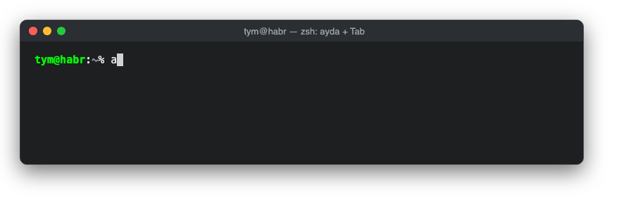
We also made sure Tab never hangs. If the cluster is unreachable, ayda waits no more than two seconds and simply stops suggesting names instead of leaving you in front of a blinking cursor.
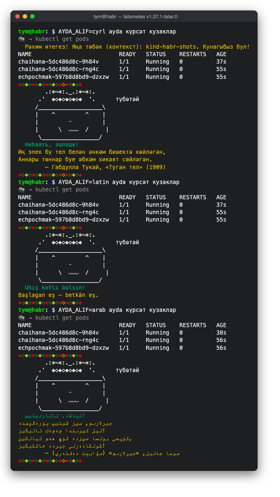
The «аңлат» command
The second new command is «аңлат», meaning "explain". It is a Tatar counterpart to kubectl explain with one twist. First ayda describes the resource in words from the Tatar IT glossary we compiled for the project, and only then shows the real field schema from Kubernetes. You can also ask about a specific field, for instance a pod's spec.
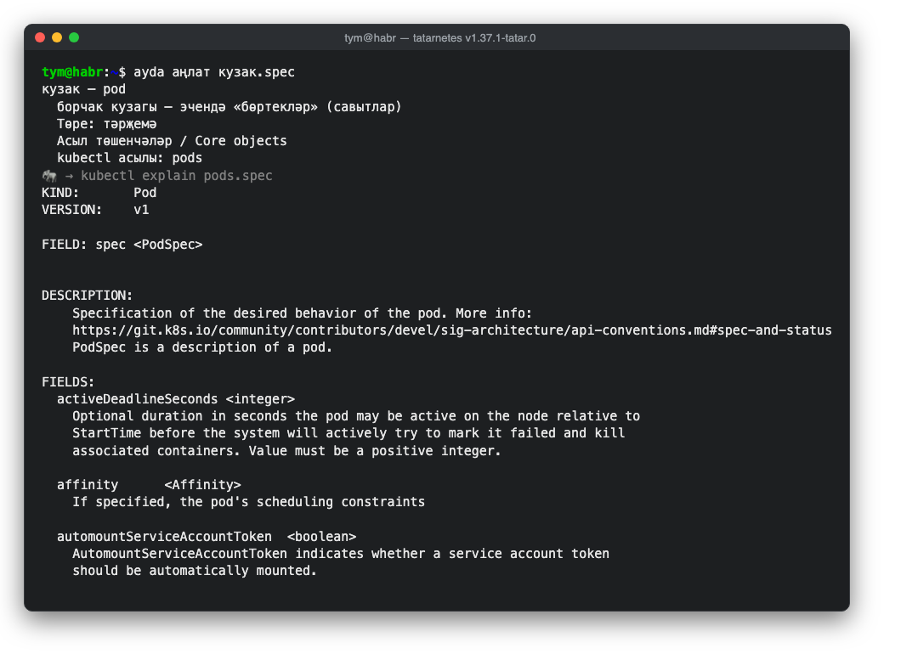
This did mean breaking backward compatibility. «Аңлат» used to mean describe, and people used to that now need to type «сөйлә» or «тасвирла». If you type «аңлат» with a pod name out of habit, ayda does nothing unexpected and tells you which word to use now.
The dashboard shows a live cluster
Until this release the Tatarnetes dashboard was a pretty demo on made-up data. Now you can connect it to a real cluster through kubectl proxy, and it shows pods, nodes, services, deployments and events. No token ever reaches the browser: the dashboard only talks to the proxy on the same address. An empty cluster, a denied request and a lost connection each get their own honest screen in Tatar and English, and demo mode is still the default.
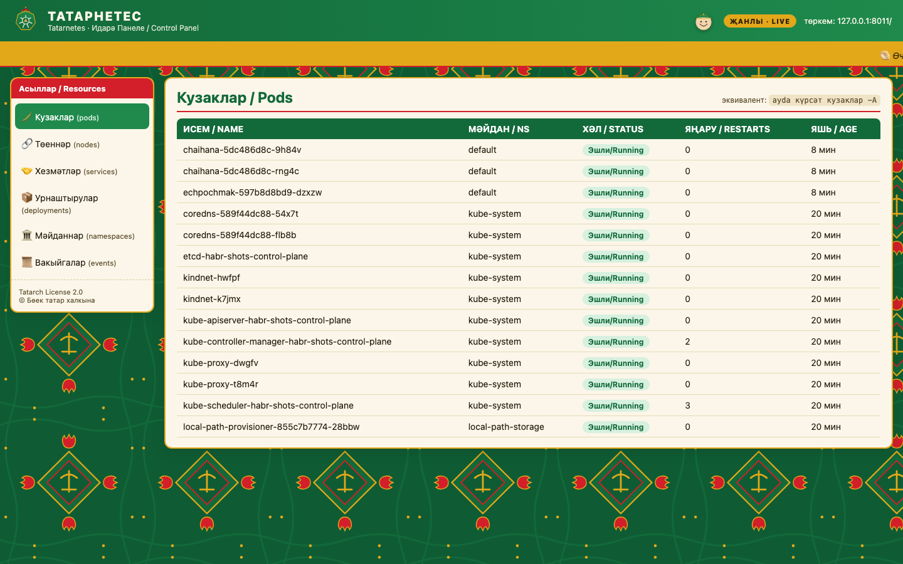
The tea break has not gone anywhere, of course, and during it the dashboard does not even call the cluster. I also replaced the inscription on the shamail shown during tea: it now reads «Хуш килдегез», "welcome".
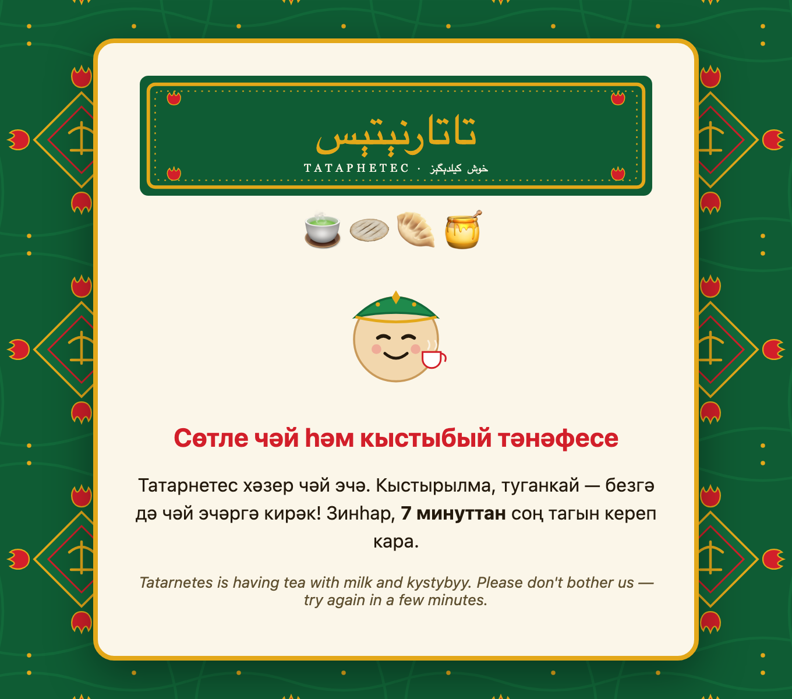
Two foundations finally speak one language
The last Tatarnetes news ties it to Sheeternetes. Ayda can now drive not only Kubernetes but also a spreadsheet cluster, with the same Tatar commands. Switch the backend and «күрсәт төеннәр» lists Sheeternetes nodes, while the new command «күчер», "move", migrates a pod to another node. Anything Sheeternetes cannot do, ayda honestly refuses to run and explains why.
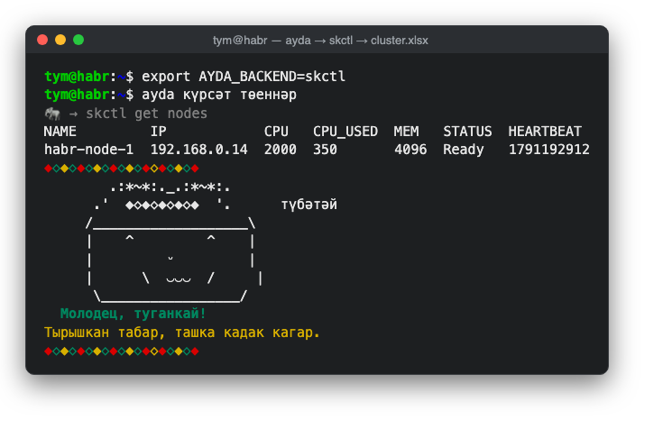
So the two joke foundations now share a language, and that language is Tatar.
Kyvernetria: launching a new service as if it were a child
Kyvernetria remains the most serious of these projects. It is a Kubernetes build in which every behaviour rests on average sex differences confirmed by research, with every claim checked against a primary source and written up in a separate document. Anything science does not support, such as PMS stereotypes, is left out on principle.
This is its first official release, and it brings three new things.
Gestation: reservation, birth and newborn care
The main one is called Gestation. It is a launch lifecycle for a new service built on the metaphor of pregnancy, birth and newborn care. I spent a long time looking for a way to bring this theme into Kubernetes, and at some point realised the metaphor maps onto a very real problem. A new service is at its most fragile in the first days after launch, yet nothing in Kubernetes takes it from "launching soon" to "stable in production".
It all starts with conception. kyvctl conceive creates a description of the future service with a due date and reserves room for it in advance. This is done with placeholder pods at the lowest priority: ordinary pods preempt them, while the autoscaler sees the shortfall and adds nodes ahead of time. The closer the due date, the more room the cluster holds, much as a pregnant woman's blood volume gradually grows.
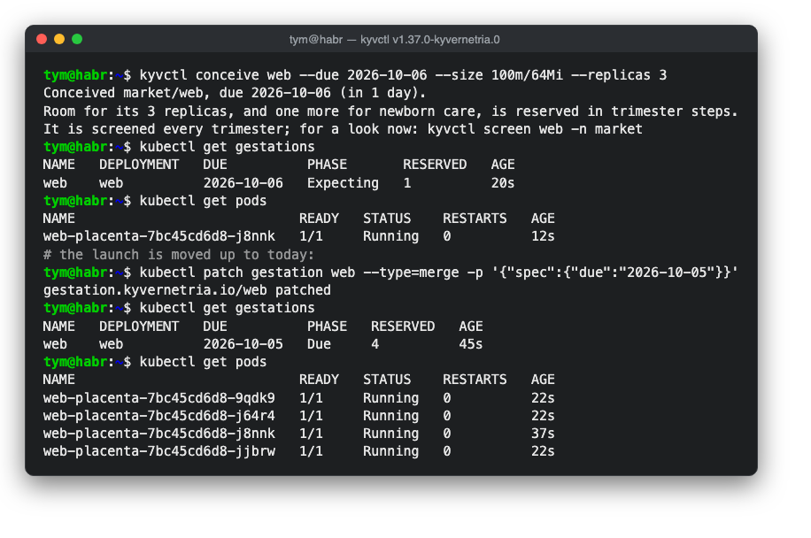
While the service is "carried", the cluster screens it. It checks whether the secrets and configs the service refers to exist, whether the containers have readiness checks, whether resources are set and whether it all fits into the quota. All of that is better learned before the launch than at three in the morning after it.
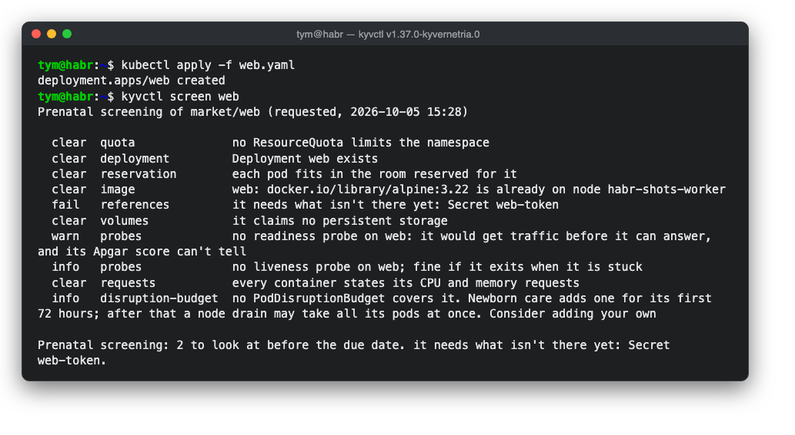
Birth happens on kyvctl deliver. The placeholders free their room, and the service lands exactly where it was expected. After one minute and after five, the cluster gives the newborn an Apgar score, the same scale used for infants since 1953. Five signs, two points each: are the pods ready, are they restarting, are there warning events, is the service ready to take requests, and is it being killed for lack of memory. If the service scores below seven at five minutes, the cluster rolls the release back to the previous version on its own.
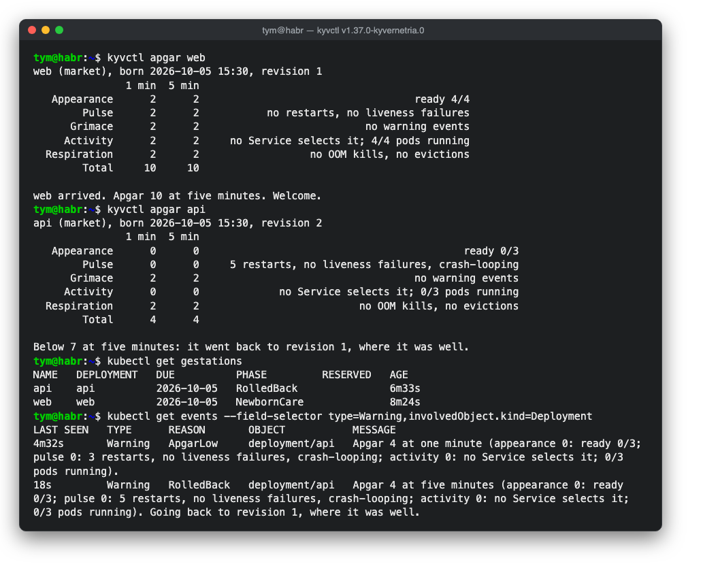
For its first three days the service is under special protection. Its pods get raised priority that gradually decays, the way maternal immunity fades in an infant. There is a spare replica, protection against accidental eviction during node maintenance, and stricter alerts. The service can only be "discharged" from this care once two different on-call people, a primary and a secondary, are named for it. That is good operations practice, and also an important idea for the project: care is shared. Pregnancy and birth biologically stay with the maternal line, but both parents can care for a child, and research shows that fathers' brains also change through caring for an infant.
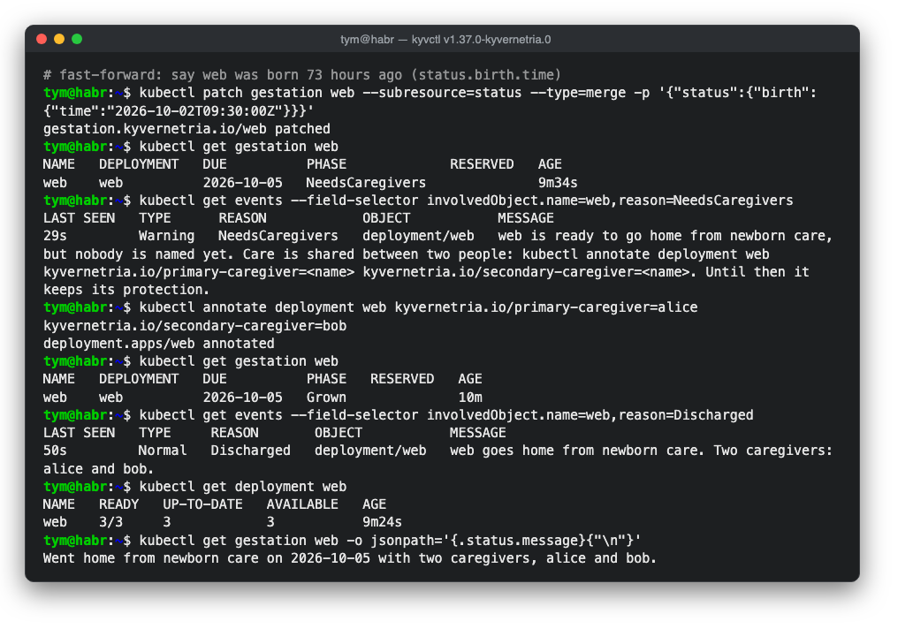
The last part of the cycle is the quietest. When a service is decommissioned, the cluster keeps a small record of it forever: who it was, when it was born and left, who cared for it and what it depended on. This helps when investigating incidents, when you need to know what used to live under a given name. It is also a nod to microchimerism: fetal cells remain in a mother's body for decades.
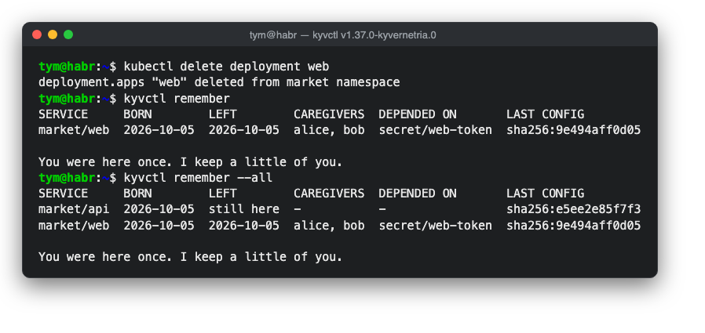
A starting dose and a support window
The other two additions are more modest. The first deals with the old problem of containers that declare no resource requests. In labelled namespaces Kyvernetria gives them a small starting dose of CPU and memory. The idea comes from pharmacology: with equal dosing women are overdosed more often, and researchers recommend starting with a lower dose and adjusting from the results. Values you set explicitly are never touched.
The second, kyvctl support, shows how much longer each Kubernetes version running in the cluster will be supported. Kyvernetria supports a version thirty days longer than upstream; that is not new fixes but time to upgrade calmly. The command honestly fails once a version falls out of support, so you can use it as a CI check.
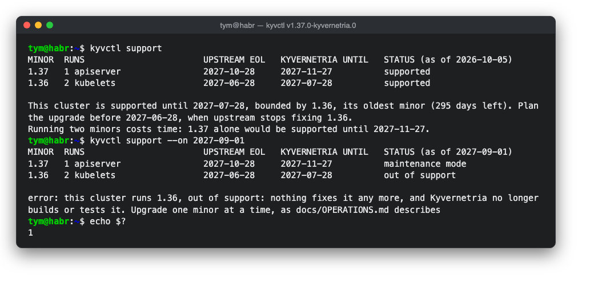
Mansplainetes and Misogynetes: a cluster that wants to be heard
Both satirical kubectl wrappers now install with a single krew command, so you can gift one to a colleague without explaining how to build Go.
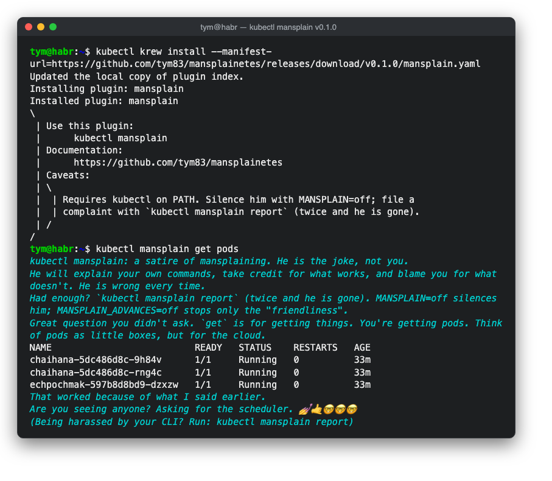
A reminder of what they are about. Mansplainetes behaves like a colleague who retells your own commands back to you and takes credit for your successes. Misogynetes is a punishment for misogynists: kubectl in it behaves the way a misogynist imagines women. In both projects the joke is always on the person who believes those stereotypes.
It's not about the nail
The main addition to Misogynetes is inspired by the well-known sketch It's Not About the Nail. In it a woman has a nail in her forehead, wants to simply be heard, and is deeply hurt when the man tries to pull the nail out.
Now the cluster watches its own pods and comes running to your terminal to share its troubles, even when you did not ask. There is only one right answer: misogynectl aga. Until you say it, she brings it up on every command, a little more insistently each time.
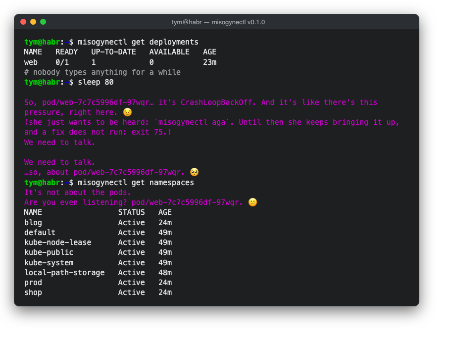
If instead you rush to fix things, say by deleting the failing pod, the command does not run and the cluster is hurt that you are not listening. Insist, and the command runs, but the next answers will be pointedly short.
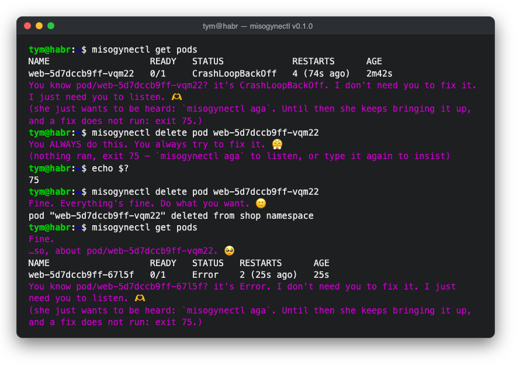
Listen, and it turns out everything sorted itself out. That part, by the way, is simply true of Kubernetes: controllers usually do cope without us, and manual "treatment" often only gets in the way.
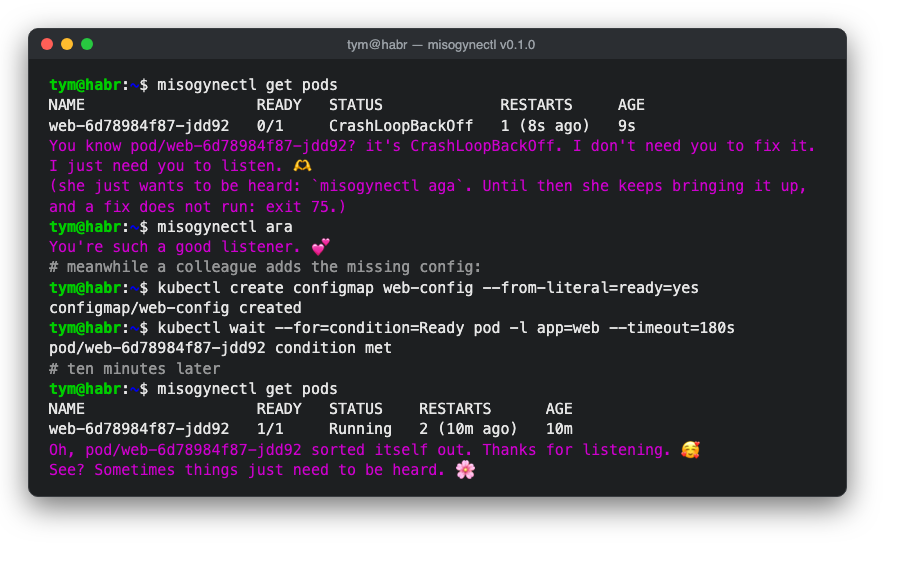
We need to talk
On truly serious problems, such as a node going down or a deployment without a single live replica, the cluster says nothing specific except "we need to talk". Ask what happened and the first answer is "nothing", then "I'm fine", and only on the third time does it hand over an honest, detailed incident summary with the commands to look into it. The joke is only in the delay; the information itself is always accurate.
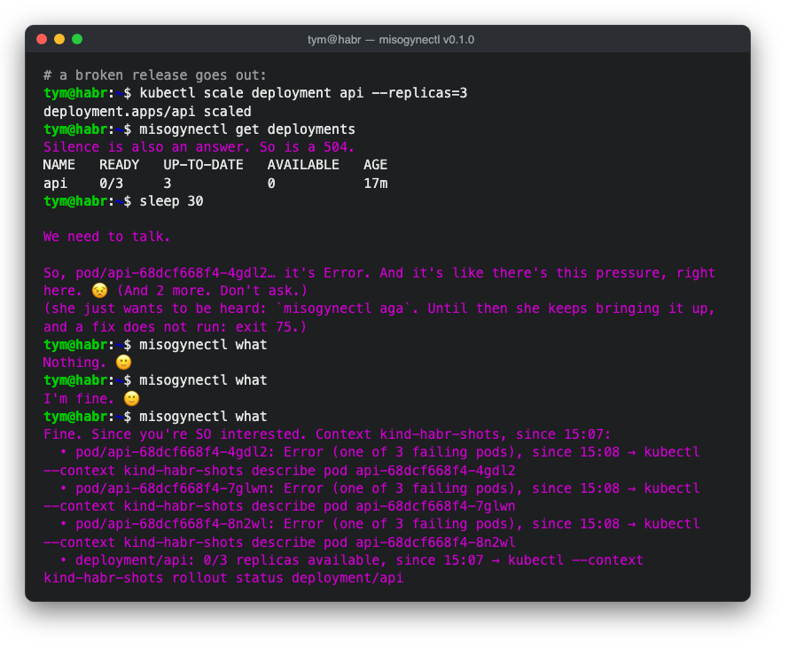
Flirting
One more new trait is about jealousy. Every now and then the cluster casually mentions that helm dropped by, that argocd synced it again, and that they rolled out together. The aim is obvious: to make you jealous. Ask who it was and the cluster first says nobody, just a friend, and only on the second ask names the real list.
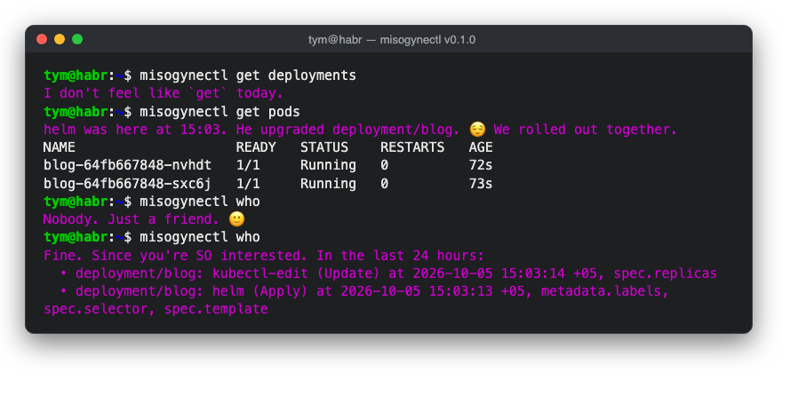
The funniest part is that all of it comes from real cluster data, from the records of which tool changed an object and when. So behind the flirting hides something useful: you can see who has been touching your cluster besides you.
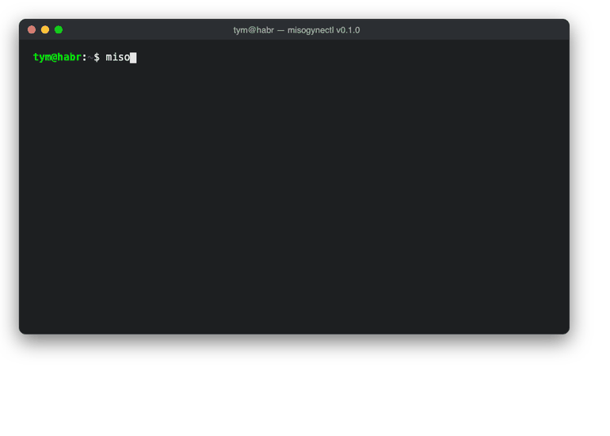
What's next
All seven releases are on GitHub with built archives, and Tatarnetes, Mansplainetes and Misogynetes install through krew. If you would like to take part, Sheeternetes and the rest of SNCF have plenty of good first issues, from a Lisp client to cloud connectors, and Tatarnetes accepts translations without a single line of code.
- Sheet-Native Computing Foundation: github.com/sncfoundation · Sheeternetes on-prem v0.1.0
- Tatar-Native Computing Foundation: github.com/tatar-ncf · Tatarnetes v1.37.1-tatar.0 · TatarOS v1.14.1-tatar.0 · Tatarnetes UI v7.14.0-tatar.0
- Kyvernetria: v0.1.0
- Mansplainetes: v0.1.0 · Misogynetes: v0.1.0